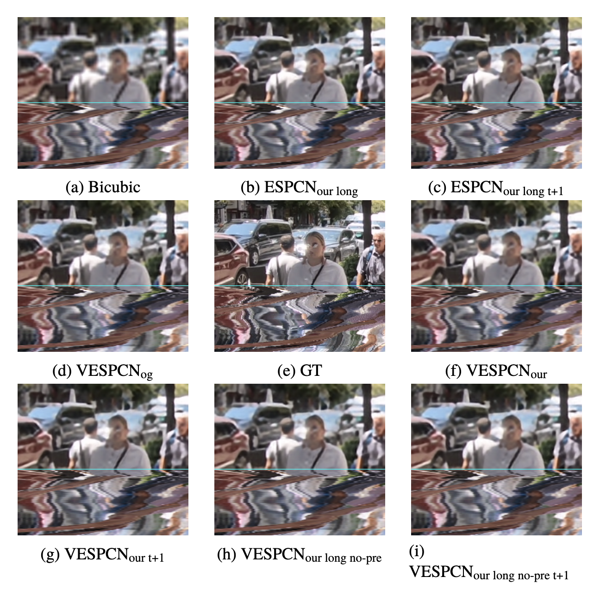
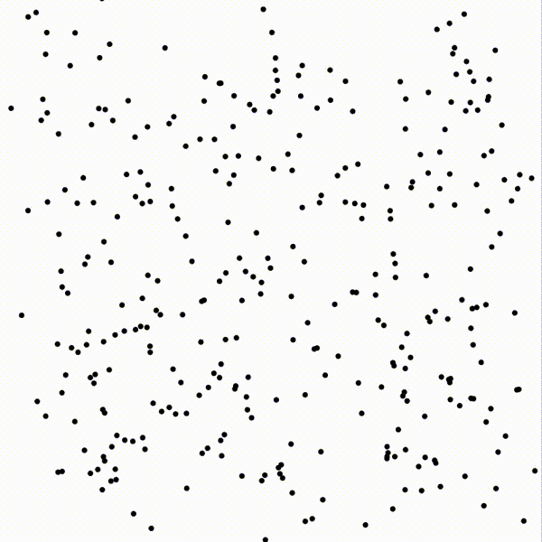

Erik Båvenstrand
Data Scientist | ML Engineer

Published under Klarna's open-source umbrella,
mleko
is designed to streamline machine learning processes. It's designed
to facilitate a smooth and efficient transition from data collection
to model development, catering to the needs of engineers and data
scientists alike. It distinguishes itself by offering intelligent
caching of expensive operations, seamless data integration, robust
processing capabilities, and a directed acyclic graph (DAG)
architecture. These features contribute to a more straightforward
and reproducible machine learning workflow, reducing development
time and enhancing project manageability.
As part of the Klarna Graduate Engineering Program hackathon, our project "Scenic Route" emerged as the 1st place winner among seven competing projects. "Scenic Route" is a user-friendly tool that facilitates planning picturesque walks between two points (A and B), guiding you past notable landmarks along the way. This was accomplished by harnessing the capabilities of the Google Maps API, enabling support for up to 25 landmark stops during your journey.
For my degree project, I investigated the use of deep learning for real-time video super-resolution, comparing it to bicubic interpolation. Using a motion compensation network and an upsampling network, I evaluated both methods using quality metrics (e.g., peak signal-to-noise ratio) and performance metrics (e.g., latency, throughput). The deep learning method outperformed bicubic interpolation in quality but lagged in performance. However, by modifying the deep learning model, I achieved similar latency to bicubic interpolation while maintaining high throughput and quality suitable for real-time applications.

This project focused on using deep learning to add color to black-and-white images with a U-Net architecture. Both regression and classification methods were applied to colorize 64x64 images from the Imagenet dataset. The classification method produced more vibrant colors, though sometimes with unexpected tones, while the regression method resulted in washed-out colors. To enhance the results, potential improvements include using a larger dataset, a more advanced network, and refining the training process.

The Spotify Virality Visualizer is a tool that offers insights into global music trends by analyzing data from Spotify's viral playlists, focusing on the top 50 songs each week across countries from winter 2017 to winter 2020. It visualizes key song attributes, such as danceability, energy, speechiness, acousticness, instrumentalness, liveness, and valence, which help in understanding a track's appeal and dynamics in the viral music landscape.

The thesis compares the performance of three imitation learning algorithms, Behavior Cloning, DAGGER, and HG-DAGGER, using human experts in a simulated car racing environment (TORCS) with limited expert time. The study focused on evaluating the algorithms based on the distance covered within a set time, considering how well they scaled with more expert input. The results showed that HG-DAGGER outperformed the other algorithms, covering the most distance and demonstrating the best scalability with additional expert time.

The N-Body simulation project models particles influenced by gravitational forces and features two methods for approximation: Brute Force, which is computationally expensive but simple and parallelizable, and Barnes-Hut, a more efficient technique that groups distant particles into clusters to approximate their gravitational effect. The project also extends to parallelizing both methods and comparing their efficiencies.
